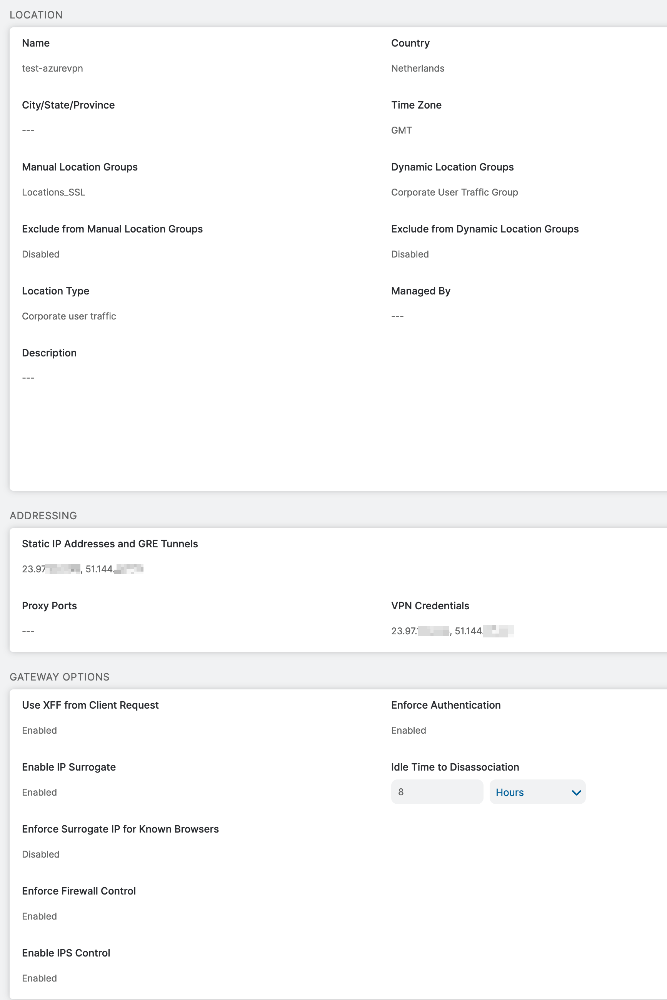
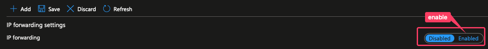
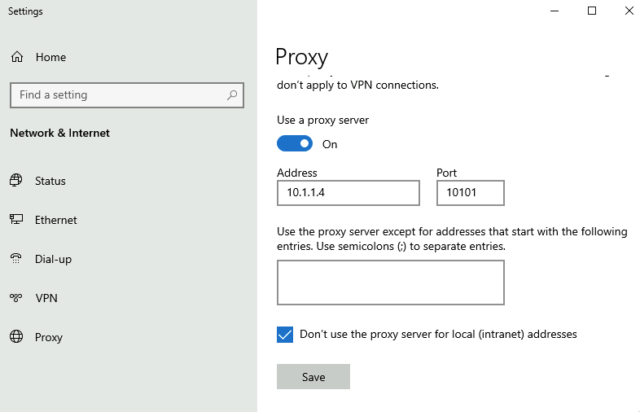
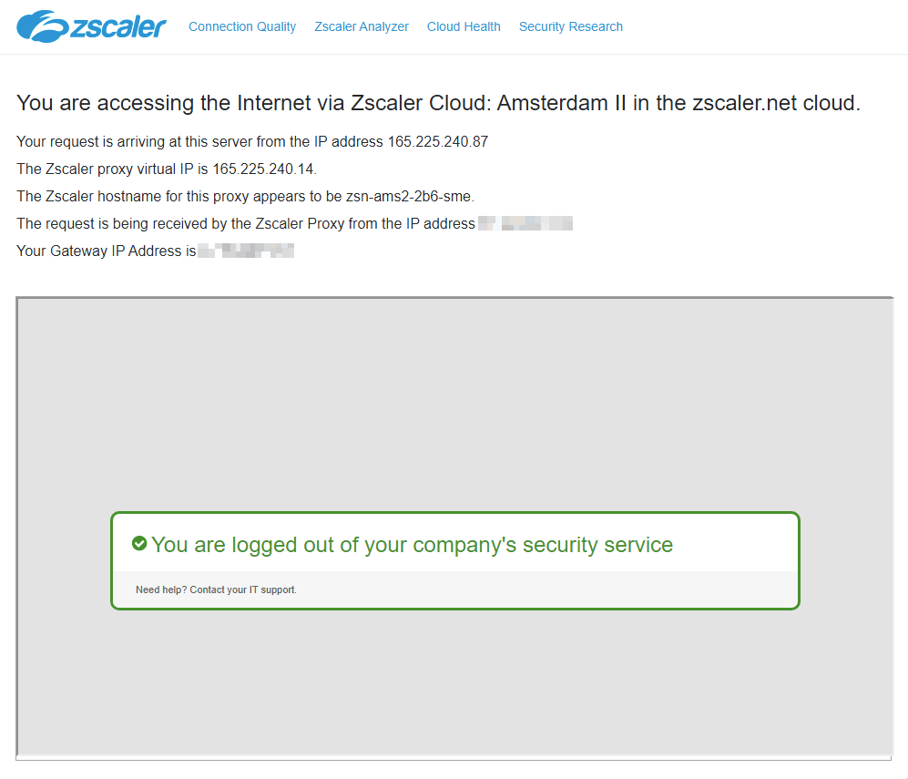

Zscaler Tunnels on Azure - Part 1 - VPN Gateway¶
This post will look at how to build IPSec tunnels to Zscaler on Azure with Azure VPN Gateway. The complete Lab setup including notes is available here as bicep files with additional notes and outputs.
The target setup should provide the options to forward traffic to the Zscaler tunnels in a default route and non-default route environment.
Lab files¶
Lab Notes here
The lab can be deployed with the following command:
# dry run
az deployment sub what-if --location 'westeurope' --template-file main.bicep
# deploy
az deployment sub create --location 'westeurope' --template-file main.bicep
Components that will be deployed:
- Resource Group
- 2 Vnets (gateway and spoke)
- VPN Gateway with 2 local network gateways building tunnels to Zscaler locations Frankfurt and Amsterdam
- Bastion
- Test VMs in both subnets (Linux VM in gw subnet, Windows VM in spoke subnet)
- VMSS for DNAT with a load balancer in front
Tunnel and Zscaler config¶
VPN Gateway¶
IKEv2 parameters used (for Phase 2 AES IPSec encryption an extra license is needed1):
connectionMode: 'Default'
connectionProtocol: 'IKEv2'
connectionType: 'IPsec'
dpdTimeoutSeconds: 20
ipsecPolicies: [
{
dhGroup: 'DHGroup2'
ikeEncryption: 'AES256'
ikeIntegrity: 'SHA256'
ipsecEncryption: 'None'
ipsecIntegrity: 'SHA256'
pfsGroup: 'None'
saDataSizeKilobytes: 102400000
saLifeTimeSeconds: 28800
}
]
Full config: vpngw.bicep
Zscaler¶
The following needs to be created in the Zscaler portal:
- Static IPs (VPN gateway public IPs)
- VPN Credentials
- Location (static IPs and VPN credentials need to be referenced here)

Default Route Environment¶
You cannot configure 0.0.0.0/0 on the local network gateway, but the default route range can be divided into two prefixes that work: 0.0.0.0/1, 128.0.0.0/1. This will also be preferred over the system route for 0.0.0.0/0 to the internet because it's more specific. All traffic will be forwarded to the VPN Gateway
az network nic show-effective-route-table -n nic-vm-sp -g rg-zsc-vpngw -o table
Source State Address Prefix Next Hop Type Next Hop IP
--------------------- ------- ---------------- --------------------- -------------
Default Active 10.8.0.0/16 VnetLocal
Default Active 10.1.0.0/16 VNetPeering
VirtualNetworkGateway Active 0.0.0.0/1 VirtualNetworkGateway 10.1.0.6
VirtualNetworkGateway Active 0.0.0.0/1 VirtualNetworkGateway 10.1.0.7
VirtualNetworkGateway Active 128.0.0.0/1 VirtualNetworkGateway 10.1.0.6
VirtualNetworkGateway Active 128.0.0.0/1 VirtualNetworkGateway 10.1.0.7
Default Active 0.0.0.0/0 Internet
For peered Vnets, the option Use the remote virtual network's gateway or Route Server needs to be active for the VPN routes to be advertised
Non-Default Route Environment¶
In this setup, the Zscaler Global Public Service Edge IPs will be announced on the local network gateway. Those are anycast IPs advertised in every Zscaler datacenter.
Also, some form of DNAT is needed - either with a NVA firewall appliance (e.g. Fortigate) or a Linux NVA with iptables DNAT. The client IP will not be preserved with DNAT and only NVA IPs be visible in the Zscaler logs.
Linux NVA¶
DNAT/SNAT on Linux can easily be enabled with iptables. Packets reaching the NVA on a specific port (e.g. 10101 for a Zscaler Dedicated Proxy Port 2 or ports 80, 443 )
Working Linux settings¶
Note
This configuration will not survive a reboot
echo 1 > /proc/sys/net/ipv4/ip_forward
iptables -t nat -A PREROUTING -p tcp -i eth0 --dport 10101 -j DNAT --to-destination 185.46.212.88:10101
iptables -t nat -A POSTROUTING -d 185.46.212.88 -j MASQUERADE
Info
The first iptables rule changes the destination IP, the second rule changes the source IP to the VM NIC
There is a lot more room to make the config more versatile, e.g. announce one Zscaler anycast IP per tunnel and use different ingress ports on the NVA. This way, traffic could be steered to the preferred tunnel via PAC file:
graph LR
A["PAC file: "PROXY 10.1.1.4:10101""] --> B[NVA port 10101];
B ---|NVA routing decision| C[forward to 185.46.212.88:10101];
C --> D[tunnel to FRA4];graph LR
A["PAC file: "PROXY 10.1.1.4:8080""] --> B[NVA port 8080];
B ---|NVA routing decision| C[forward to 185.46.212.89:8080];
C --> D[tunnel to AMS2];Tip
A PAC file also supports multiple proxy assignments, e.g. return "PROXY 10.1.1.4:10101; PROXY 10.1.1.4:10102; DIRECT", so resiliency is not a problem.
In this example, if the first proxy node is not reachable, it will fall back to the second one; if that's not reachable, traffic will go direct
If SNAT port exhaustion is an issue, the net.ipv4.ip_local_port_range setting (see: here) should be adjusted, or multiple ip addresses can be assigned to a NIC in Azure 4
NVA Provisioning¶
The Linux NVAs don't need much config, they are basically just a NAT gateway. However, to make the configuration easy and persistent across reboots, the VM can be provisioned with the correct settings with cloud-init3
cloud-init scripts can be added to Azure VMs during creation with the --custom-data switch (e.g. Lab repo vmss.bicep)
Sample cloud-config.yml:
#cloud-config
package_upgrade: true
runcmd:
- echo 1 > /proc/sys/net/ipv4/ip_forward
- echo 1 > /proc/sys/net/ipv6/conf/all/forwarding
- iptables -t nat -A PREROUTING -p tcp -i eth0 --dport 10101 -j DNAT --to-destination 185.46.212.88:10101 -m comment --comment "forward port 10101 traffic to zscaler"
- iptables -t nat -A POSTROUTING -d 185.46.212.88 -j MASQUERADE -m comment --comment "snat traffic to zscaler"
- echo iptables-persistent iptables-persistent/autosave_v4 boolean true | debconf-set-selections
- echo iptables-persistent iptables-persistent/autosave_v6 boolean true | debconf-set-selections
- apt install iptables-persistent -y
- wget -O /tmp/netdata-kickstart.sh https://my-netdata.io/kickstart.sh && sh /tmp/netdata-kickstart.sh --non-interactive
write_file:
- path: /etc/sysctl.conf
content: |
net.ipv4.ip_forward=1
net.ipv6.conf.all.forwarding=1
net.ipv4.conf.all.accept_redirects = 0
net.ipv4.conf.all.send_redirects = 0
append: true
The config file will enable IP forwarding, set the iptablesrules and make those persistent across reboots. Also, Netdata will be installed for monitoring and is available at: http://<VMIP>:19999
IP forwarding also needs to be enabled on the network interface resource in Azure:

NVA as VMSS¶
The Linux NVA can also be deployed as a VMSS, with that we can achieve scalability (manual or autoscaling) and resiliency by placing instances in different AZs (see: vmss.bicep#zones). For load balancing the VMSS, Azure Load Balancer will be used (see: vmss.bicep#ilb resource)
Note
Currently cloud-init settings can not be updated on a deployed VMSS with CLI or Powershell 5, so updating VMSS instances with new settings is probably best done with an OS image gallery and updating the image.
Test¶
- On spoke VM add the NVA IP as a proxy server:

- Check connectivity at
http://ip.zscaler.com:

A packet capture on the NVA confirms the NAT is working:
jo@vm-gwsn:~$ tcpdump -i eth0 'port 10101'
17:53:16.490228 IP 185.46.212.88.10101 > 10.1.1.4.57323: Flags [P.], seq 193959:193998, ack 2964, win 2113, length 39
17:53:16.490241 IP 10.1.1.4.10101 > 10.8.0.4.57323: Flags [P.], seq 193928:193959, ack 2964, win 2113, length 31
17:53:16.490244 IP 10.1.1.4.10101 > 10.8.0.4.57323: Flags [P.], seq 193959:193998, ack 2964, win 2113, length 39
17:53:16.490723 IP 10.8.0.4.57323 > 10.1.1.4.10101: Flags [P.], seq 2964:2999, ack 193928, win 2050, length 35
17:53:16.490723 IP 10.8.0.4.57323 > 10.1.1.4.10101: Flags [.], ack 193998, win 2050, length 0
17:53:16.490739 IP 10.1.1.4.57323 > 185.46.212.88.10101: Flags [P.], seq 2964:2999, ack 193928, win 2050, length 35
17:53:16.490743 IP 10.1.1.4.57323 > 185.46.212.88.10101: Flags [.], ack 193998, win 2050, length 0
17:53:16.490850 IP 10.8.0.4.57323 > 10.1.1.4.10101: Flags [P.], seq 2999:3038, ack 193998, win 2050, length 39
17:53:16.490853 IP 10.1.1.4.57323 > 185.46.212.88.10101: Flags [P.], seq 2999:3038, ack 193998, win 2050, length 39
17:53:16.495014 IP 185.46.212.88.10101 > 10.1.1.4.57323: Flags [.], ack 3038, win 2111, length 0
17:53:16.495027 IP 10.1.1.4.10101 > 10.8.0.4.57323: Flags [.], ack 3038, win 2111, length 0
17:53:16.543674 IP 10.8.0.4.57327 > 10.1.1.4.10101: Flags [P.], seq 3424:3463, ack 13642, win 2050, length 39
17:53:16.543702 IP 10.1.1.4.57327 > 185.46.212.88.10101: Flags [P.], seq 3424:3463, ack 13642, win 2050, length 39
Costs¶
Example Costs
VPN Gateway: SKU VpnGw2AZ ~$400/month + traffic
VMSS: 2x Standard_D2sv3 ~245/month (other VM instance sizes should be tested)
LB: SKU Standard ~20/month